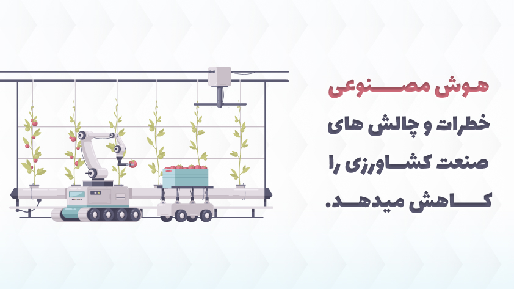

با استفاده از الگوریتمهای یادگیری ماشین و بررسی تصاویر گرفته شده توسط ماهوارهها و پهپادها، فناوریهای مجهز به هوش مصنوعی شرایط آب و هوایی را پیشبینی، پایداری محصول را تجزیه و تحلیل و مزارع را از نظر وجود بیماریها یا آفات و تغذیه ضعیف گیاهان در مزارع با استفاده از دادههایی مانند دما، بارندگی و باد ارزیابی میکنند. علاوه بر این، هوش مصنوعی به بهبود ژنتیک بذر و توسعه ماشین آلات کشاورزی کارآمدتر کمک میکند. با چنین راه حلهای مبتنی بر هوش مصنوعی، کشاورزان میتوانند نیازهای جهان را برای افزایش مواد غذایی پایدار بدون کاهش منابع طبیعی گرانبها برآورده کنند.
کاربرد هوش مصنوعی در صنعت کشاورزی مزایای متنوعی را به دنبال دارد. این مزایا هم به کشاورز، هم به مصرف کنندگان و هم به طبیعت سود میرساند. در ادامه بخشی از فواید هوش مصنوعی در صنعت کشاورزی آورده شده است
با کمک هوش مصنوعی، کشاورزان قادرند تا نیاز کوتاه مدت و بلند مدت بازار را بسنجند و پرسودترین محصول را انتخاب کنند
از طریق این فناوری، پیشبینی میزان نیاز به کود، آب، سم، نور، دما و… آسانتر و مدیریت آنها به موقعتر است
هوش مصنوعی میتواند بهترین نوع بذر را که مناسب استفاده در آن آب و خاک است، تشخیص داده و محصول بهتر و مقویتری را ارائه دهد.
گیاهان بسیاری از فواید خود را مدیون مواد مغذی موجود در خاک هستند. بنابراین میزان مواد مغذی موجود در خاک، به منظور دستیابی به محصولی مفیدتر بسیار مهم است. تشخیص این مهم توسط هوش مصنوعی امکانپذیر است.
در کشاورزی سنتی، گاهی به دلیل عدم تشخیص صحیح محل آلودگی، از میزان زیادی سم استفاده میشود. اما هوش مصنوعی تنها مناطقی که نیاز به سمپاشی دارند را تشخیص میدهد. بنابراین از سم و آفتکش کمتری استفاده میشود و به همان ترتیب، محصول سالمتر و کره زمین پاکتر خواهد بود.
نوع و تغذیه خاک عامل مهمی در نوع و کیفیت محصولی است که کشت میشود. تعیین کیفیت خاک میتواند بسیار دشوار باشد. یک استارتاپ فناوری مستقر در آلمان به نام PEAT یک برنامه کاربردی مبتنی بر هوش مصنوعی به نام Plantix را توسعه داده است که میتواند کمبود مواد مغذی در خاک از جمله آفات و بیماریهای گیاهی را شناسایی کند. این برنامه از فناوری مبتنی بر تشخیص تصویر استفاده میکند. با ثبت تصاویر گیاهان با استفاده از تلفنهای هوشمند، کشاورزان میتوانند ایده بگیرند که کدام کود بیشتر به بهبود کیفیت برداشت کمک میکند. شرکت Trace Genomics یکی دیگر از شرکتهای مبتنی بر یادگیری ماشینی است که به کشاورزان در تجزیه و تحلیل خاک کمک میکند. چنین برنامههایی به کشاورزان کمک میکند تا وضعیت سلامت خاک و محصول را زیر نظر داشته باشند و محصولات سالم با سطح بهره وری بالاتر تولید کنند. دادههایی که توسط حسگرها و پهپادهای هوشمند ضبط میشوند، مجموعه جدیدی از اطلاعات را در اختیار کارشناسان کشاورزی قرار میدهند. اکنون میتوان دادههای حسگر درباره رطوبت، کود و سطوح مواد مغذی طبیعی را برای تجزیه و تحلیل الگوهای رشد هر محصول در طول زمان ترکیب کرد. یادگیری ماشینی یک فناوری عالی برای ترکیب مجموعه دادههای عظیم و ارائه توصیههایی برای بهینهسازی عملکرد محصول است.
آفات یکی از بدترین دشمنانی هستند که به کشاورزان آسیب میرسانند. سیستمهای هوش مصنوعی با استفاده از تصاویر ماهوارهای و الگوریتمها، دادههای تاریخی را مقایسه و میتوانند تشخیص دهند که آیا حشرهای در زمین وجود دارد یا خیر. هشدارها به گوشیهای هوشمند کشاورز ارسال میشود تا بتواند اقدامات احتیاطی لازم را انجام دهد و از ترکیبی بهینه از راه حلهای کنترل آفات استفاده کنند. سازمان ملل و آژانسهای بینالمللی با استفاده از دادههای پهپادهای بدون سرنشین و حسگرهای درون زمینی برای بهبود مدیریت آفات اقداماتی را انجام داده اند. کشاورزان با استفاده از هوش مصنوعی، دادههای دوربین مادون قرمز و هواپیماهای بدون سرنشین همراه با حسگر میتوانند سطح سلامت نسبی گیاهان را پایش و هجوم آفات را قبل از وقوع آن پیشبینی و شناسایی کنند. در واقع، بسیاری از شرکتها با بهره گیری از هوش مصنوعی قصد دارند به کشاورزان کمک کنند تا استفاده از مواد شیمیایی را کاهش دهند که این عمل در نتیجه منجر به آب، هوا، خاک و زیستگاه حیاتوحش سالمتر میشود. آب کمیابترین منبع در بسیاری از مناطق آمریکای شمالی است، به ویژه در جوامعی که بیشتر به کشاورزی به عنوان تجارت اصلی خود متکی هستند. کارآمد بودن در استفاده از آن میتواند به معنای تفاوت بین سوددهی یا عدم سوددهی مزرعه یا عملیات کشاورزی باشد. برنامه ریزی خطی اغلب برای محاسبه مقدار بهینه آب مورد نیاز یک مزرعه یا محصول معین برای رسیدن به سطح عملکرد قابل قبول استفاده میشود. الگوریتمهای یادگیری ماشینی برای حصول اطمینان از دریافت آب کافی در مزارع و محصولات کشاورزی برای بهینهسازی عملکردشان ایدهآل هستند. ژنتیک بذر بهره وری را بهبود بخشیده، نیاز به کنترل بیماریها و آفات و آبیاری را کاهش میدهد، بنابراین بسیاری از مردم بر این باورند که هوش مصنوعی منجر به بهبود ژنتیک بذر خواهد شد. تحقیقات UChicago نشان میدهد که با افزودن ژن کد کننده پروتئینی به نام FTO و پیشرفت جدید RNA، عملکرد گیاهانی، چون برنج و سیب زمینی ۵۰ درصد افزایش مییابد و تجزیه و تحلیلها نشان داد که گیاهان سرعت فتوسنتز خود را بیشتر کرده اند.
واقعیت ترکیبی (MR) و هوش مصنوعی (AI) از تکنولوژیهای نو ظهور در صنعت کشاورزی هستند که میتوانند بهرهوری مزارع را افزایش دهند. کشاورزان با استفاده از این تکنولوژیها میتواند سلامت محصولات و تجزیه و تحلیل خاک را بررسی کنند و تجهیزات را از راه دور مدیریت کنند و فرصتهای جدیدی برای رشد ایجاد کنند. حتی در دنیای مدرن ما، کشاورزی همچنان یک صنعت مهم و حائز اهمیت است. تلاش مداوم انسانها در این راستا برای بهینهسازی محصولات و افزایش دامها میباشد. فناوریهای واقعیت ترکیبی (MR) و فناوری هوش مصنوعی (AI) برخی از آخرین و پرطرفدارترین راههای نوآورانه کشاورزی هستند تا کشاورزی کلاسیک تبدیل به کشاورزی هوشمند شود. اصطلاح جدید "واقعیت ترکیبی" امروزه محبوبتر شده است. این روند به لایه برداری از اطلاعات دیجیتالی یا شبیهسازی شده بر روی دنیای واقعی اشاره میکند: ترکیب کردن واقعیت افزوده و واقعیت مجازی، منجر به یک واقعیت ترکیبی میشود. درحالیکه واقعیت مجازی (VR) شما را به یک دنیای دیجیتال دعوت میکند، واقعیت ترکیبی (MR) فرصت هماهنگسازی یک محیط مجازی و دنیای واقعی را به طور همزمان فراهم میکند.